Phiên bản tiếng Việt trọn vẹn cuốn Play Winning Tennis with Perfect Fundamentals của Julio Yacub — phân tích 4 thế đứng nền tảng, 3 kiểu đưa vợt ra sau, nghệ thuật phán đoán và bộ chân, cơ học độ xoáy cùng hệ thống cán cầm bát giác chuẩn mực.
Tác giả: Julio Yacub Minh họa: Henche Silberstein Bản dịch tiếng Việt chuyên sâu
610 East Delano Street, Suite 104, Tucson, Arizona 85705 Hoa Kỳ www.wheatmark.com
Lời Nói Đầu
Là một vận động viên quần vợt tự học, tôi luôn tìm kiếm những cuốn sách có thể giúp tôi cải thiện kỹ năng chơi của mình. Hầu hết những cuốn sách tôi đọc đều dài, dài dòng và phức tạp. Ở trường đại học, tôi gặp vấn đề tương tự: sách, sách, sách, nhưng không có cuốn nào theo sở thích của tôi, đơn giản nhưng sâu sắc. Tôi luôn cần lập dàn ý để tập trung vào những việc cụ thể mà tôi muốn làm. Đúng là một cách học tốt là lập dàn ý của riêng bạn, nhưng đôi khi chúng ta cần chúng sẵn sàng để tập trung vào mục tiêu mà không bị lạc chữ.
Cuốn sách này được viết dưới dạng dàn ý và rất đơn giản để theo dõi.
Bạn thậm chí có thể mang nó xuống sân và tập trung vào bất kỳ cú đánh nào chỉ bằng cách xem qua trang cụ thể đó.
Play Winning Tennis with Perfect Fundamentals được thiết kế dành cho người học trực quan và người học lối chơi tìm kiếm sự đơn giản mà không cần cắt góc nhưng cũng không phải là hình ảnh hoàn hảo. Trong lối chơi luôn thay đổi này, nơi có nhiều thế đứng, nhiều cách lấy vợt, đánh bóng và theo sau, tôi không thể bao gồm mọi thứ. Đó là lý do tại sao tôi biên soạn cuốn sách này như một hướng dẫn để bạn có thể hiểu cơ chế sinh học hoạt động như thế nào trong quần vợt và với sự giúp đỡ của chuyên gia địa phương, tôi hy vọng bạn có thể cải thiện đáng kể khả năng chơi quần vợt của mình.
Mặc dù các bản vẽ và sơ đồ được hiển thị từ góc nhìn của người chơi thuận tay phải, nhưng bất kỳ người chơi thuận tay trái nào cũng có thể diễn giải chúng bằng cách sử dụng chế độ xem hình ảnh phản chiếu. Tôi đã bao gồm các chế độ xem bên và phía trước cho hầu hết các nét để việc chuyển đổi sẽ dễ dàng hơn. Ngoài ra, để hiểu rõ hơn về sơ đồ sân, hãy đặt mình vào đó hoặc tưởng tượng rằng bạn đang ở trên sân chơi theo kiểu cụ thể đó (thay vì chỉ nghĩ về người chơi A và người chơi B). Cuối cùng, khi sử dụng thuật ngữ “anh ấy” và “của anh ấy”, tôi hoàn toàn ngụ ý là “cô ấy” và “của cô ấy”.
Lời Cảm Ơn
Tôi phải đề cập rằng nếu không có sự giúp đỡ của nhiều người, tôi sẽ không trở thành con người và cầu thủ như ngày hôm nay. Tôi muốn cảm ơn những người cố vấn của tôi, Nick Bollettieri, Vic Braden và Dennis Van Der Meer, vì những đóng góp liên tục của họ cho môn thể thao này và cuộc đời quần vợt của tôi.
Xin gửi lời cảm ơn đặc biệt tới Jack Groppel và Jim Loehr, những người đã khai sáng cho tôi lĩnh vực tâm lý thể thao và cơ chế sinh học (khi họ nói...tôi lắng nghe!). Tôi cũng xin gửi lời cảm ơn nồng nhiệt nhất tới huấn luyện viên đầu tiên của tôi Ron Steele, cựu huấn luyện viên trưởng đội tuyển Davis Cup Israel, vì đã che chở tôi khi tôi chưa là gì cả. Xin cảm ơn nhóm Chương trình Huấn luyện Hiệu suất Cao của USTA, đặc biệt là Nick Saviano và Paul Lubbers, vì đã nâng cao tầm quan trọng của hoạt động huấn luyện ở Mỹ. Xin gửi lời cảm ơn chân thành tới những người bạn John Lapham và Claudio Yamus của tôi...và tới tất cả học trò của tôi đã gắn bó với tôi suốt những năm qua...bạn là nguồn cảm hứng của tôi.
Cuối cùng, và quan trọng nhất, tôi xin cảm ơn gia đình tôi, đặc biệt là vợ tôi Maura và mẹ tôi Henche Silberstein, nếu không có sự đóng góp và hỗ trợ của họ thì cuốn sách này sẽ chỉ là một điều viển vông.
Về Cuốn Sách Này
Cuốn sách này thuộc bộ sách hướng dẫn quần vợt “Chơi quần vợt chiến thắng”, bao gồm mọi khía cạnh của một tay vợt thi đấu hoàn chỉnh.
Quyển 1: Chơi quần vợt để chiến thắng với những nguyên tắc cơ bản hoàn hảo
Quyển 2: Chơi quần vợt giành chiến thắng với những cú đánh cơ bản hoàn hảo
Quyển 3: Chơi quần vợt giành chiến thắng với những cú đánh đặc biệt hoàn hảo
Quyển 4: Chơi quần vợt giành chiến thắng với chiến lược hoàn hảo
Quyển 5: Nếu tôi chơi quần vợt giỏi hơn, tại sao tôi không thể thắng?
Chương 1
Thế Đứng Cơ Bản
Bốn thế đứng nền tảng — tư thế sẵn sàng, thế đứng mở, vuông và đóng — cùng chuỗi động học cơ thể tạo ra sức mạnh.
Thuận tay và trái tay
Tất cả các tư thế đều xuất phát từ tư thế thể thao, sẵn sàng. Từ vị trí trung lập này, bạn không chỉ sẵn sàng di chuyển theo bất kỳ hướng nào một cách nhanh chóng và hiệu quả (khởi đầu cân bằng), mà quan trọng nhất là “chuỗi động học của cơ thể” sẽ được tối đa hóa (sản sinh nhịp điệu và sức mạnh cũng như tăng cường khả năng kiểm soát và ngăn ngừa chấn thương).
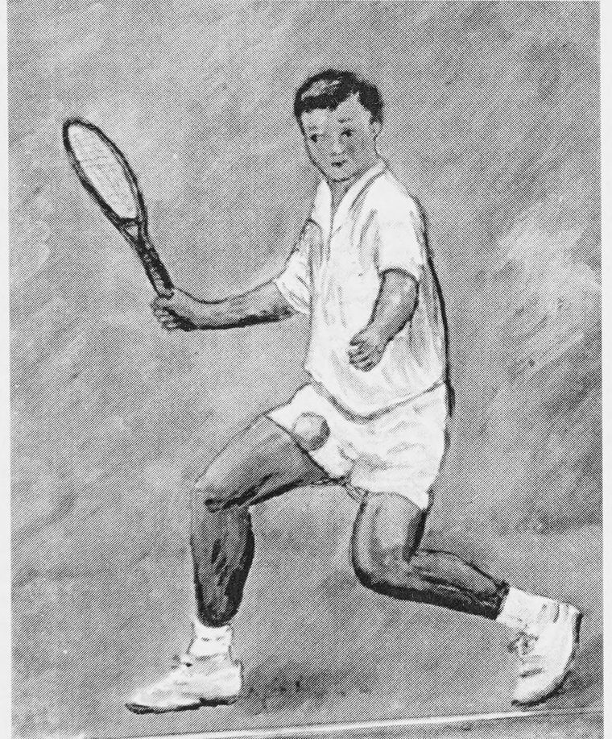
Mặc dù hầu hết người chơi chuyên nghiệp đều chọn tư thế mở (chủ yếu dành cho các cú thuận tay) vì tính chuẩn bị và phục hồi nhanh chóng của nó, nhưng bạn nên cân bằng các thông số kỹ thuật của từng thế đứng, thử nghiệm chúng và chọn tư thế của riêng mình. Hãy nhớ rằng một cầu thủ giỏi phải đủ linh hoạt để thích ứng với mọi tình huống chiến thuật và do đó, sự thành thạo trong mọi tư thế là một lợi thế.
Chuỗi động học cơ thể
Tất cả các cú đánh
Chuỗi động năng của cơ thể đề cập đến các phân đoạn của cơ thể hoạt động như một chuỗi (liên kết cơ thể) để tạo ra năng lượng. Bắt đầu với động tác duỗi đầu gối, lực mặt đất được tạo ra (“đối với mọi hành động đều có phản lực bằng nhau và ngược chiều”) và chuyển thành công từ liên kết này sang liên kết khác cho đến khi chúng chạm tới bóng.
Hệ thống liên kết cơ thể bao gồm (theo thứ tự thực hiện):
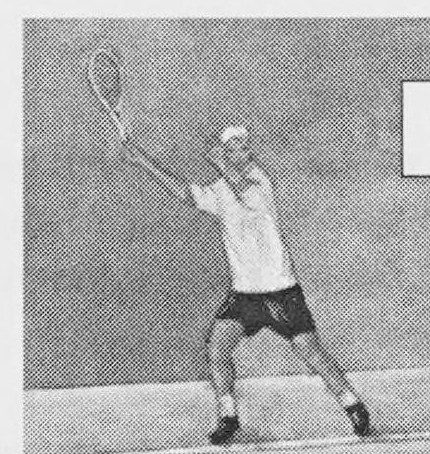
Duỗi đầu gối.
Xoay hông.
Xoay thân người.
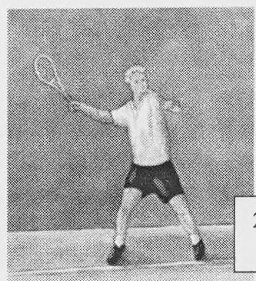
Xoay vai và cánh tay.
Duỗi khuỷu tay (xoay trong)
Uốn cổ tay.
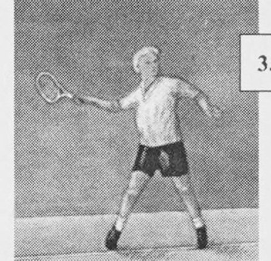
Để tạo ra sức mạnh và khả năng kiểm soát tối đa (tránh chấn thương), các liên kết cơ thể phải phối hợp (thời gian), nghĩa là hệ thống liên kết cơ thể phải được giữ theo trình tự cho tất cả các cú đánh bắt đầu từ mặt đất lên (đầu gối đến cổ tay), không bỏ sót bất kỳ phân đoạn nào và không sử dụng các bộ phận cơ thể phụ (chuyển động khuỷu tay không cần thiết hoặc quá nhiều cổ tay).
Thế sẵn sàng (trung lập)
Hai chân dang rộng bằng vai.
Đầu gối cong khoảng 30 độ. Hạ thấp cơ thể (trọng tâm) sẽ chuẩn bị cho cơ chân của bạn phản ứng nhanh hơn cũng như đưa bạn vào tư thế cân bằng.
Ngẩng đầu lên và trọng lượng cơ thể hơi hướng về phía trước (dựa vào mu bàn chân).
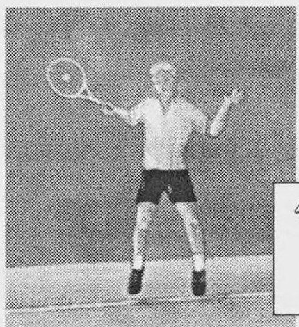
Vợt được giữ ở giữa cơ thể bạn, hướng ra phía trước, cao nhưng dưới tầm mắt.
Tay tự do cầm vợt ở cổ vợt.
Hãy thoải mái nhưng cảnh giác và chú ý đến cú đánh tiếp theo của đối thủ.
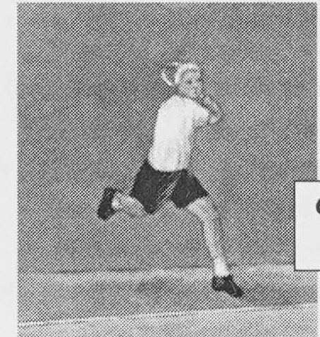
Thế đứng mở
Ưu điểm:
Chuẩn bị nhanh hơn (đối với các cú chạm đất và đặc biệt cần thiết để trả giao bóng nhanh).
Phục hồi nhanh hơn (chân sau sẵn sàng đẩy đến “Điểm hồi vị”).
Bao quát sân tốt hơn.
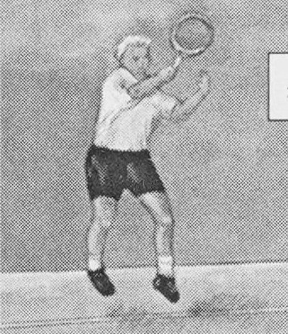
Khả năng đánh lừa hướng đánh bóng xuất sắc (khiến đối thủ phải đoán).
Dễ dàng thực hiện các cú đánh chéo sân.
Cho phép bạn giữ rõ phần phía trước của cơ thể trong suốt cú đánh (không hạn chế xoay vai và hông).
Dễ trượt và tiếp cận trên sân đất nện, đặc biệt là trong những cú phải vươn người.
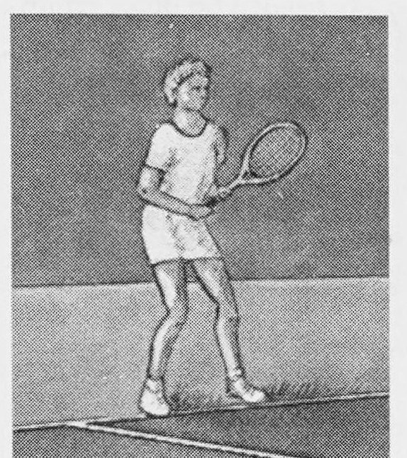
Khả năng tăng tốc đầu vợt tuyệt vời.
Nhược điểm:
Yêu cầu sự linh hoạt của phần thân trên để xoay vai trong khi vẫn giữ hông mở (đặc biệt là đối với các cú đánh trái tay).
Yêu cầu tác động chân mạnh mẽ do khả năng chuyển trọng lượng giảm (không bước vào bóng như tư thế vuông góc).
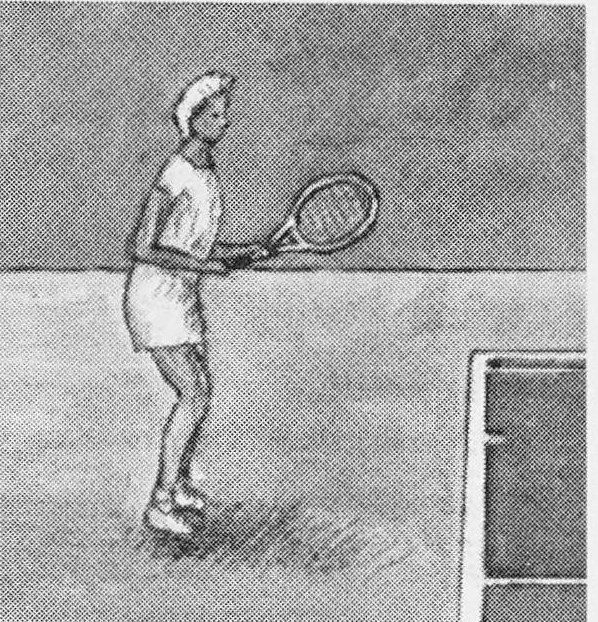
Cần động tác chân nhanh hơn để đến gần bóng hơn. Cú đánh ở tư thế mở bằng hai tay yêu cầu bạn phải đến gần bóng hơn để tiếp xúc, so với tư thế vuông góc hoặc đóng. Điều này tạo nên sự khác biệt lớn khi thực hiện các cú đánh góc rộng.
Khó thực hiện được những cú đánh cận biên.
Cần có cánh tay và cổ tay khỏe để thực hiện cú vung và bắt bóng tốt.
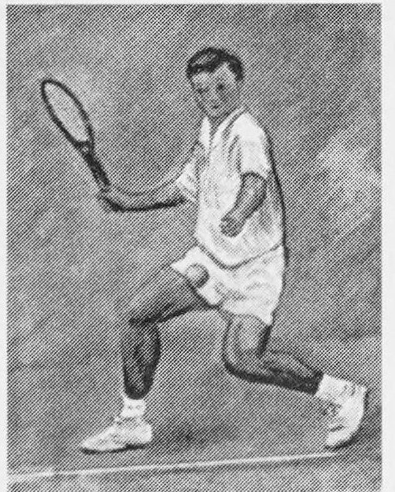
Tỷ lệ bắn thấp hơn do phải sử dụng nhiều cánh tay và cổ tay.
Thế đứng vuông
Ưu điểm:
Chuyển trọng lượng tuyệt vời nhờ bước tiến về phía trước.
Sản sinh năng lượng tốt (sử dụng chuỗi động năng).
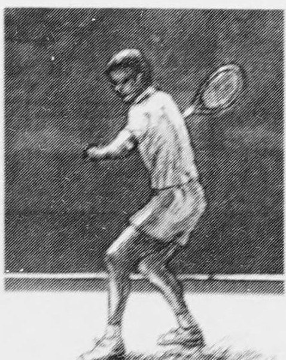
Nhắm mục tiêu tốt hơn một cách dễ dàng để theo sát mục tiêu.
Dễ dàng thiết lập cú trái tay (đặc biệt là cú đánh bằng một tay).
Nhược điểm:
Cần thêm một bước nữa để khôi phục.
Khó giữ thăng bằng hơn.
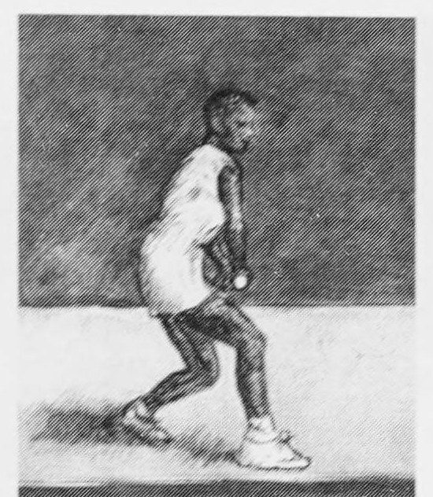
Thế đứng đóng
Ưu điểm:
Dễ dàng thực hiện các cú đánh xa và vô-lê.
Dễ dàng cắt bóng phòng thủ.
Nhược điểm:
Chuyển trọng lượng không hiệu quả.
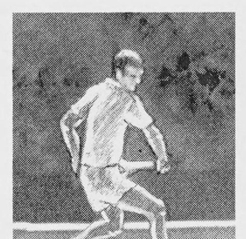
Mất năng lượng (sức mạnh) do hông bị khóa sang một bên (không xoay hông).
Khó giữ thăng bằng hơn do nền (vị trí chân) yếu.
Gia tốc đầu vợt giảm đi.
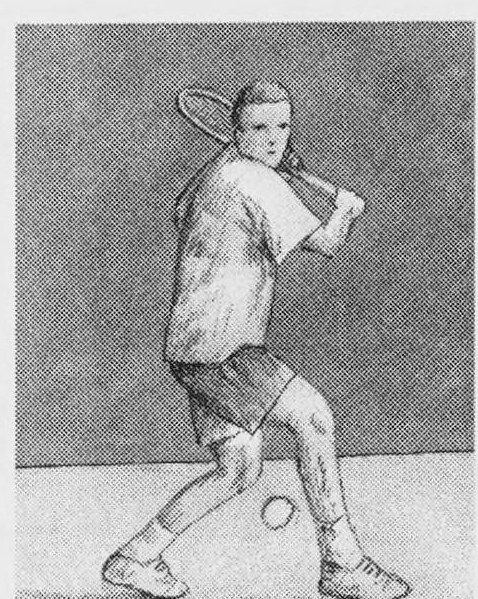
Phục hồi chậm hơn.
Khó thực hiện những cú đánh chéo sân.
Xem Phục hồi trong chương “Dự đoán và bước chân”
Chương 2
Phong Cách Đưa Vợt Ra Sau
Ba kiểu đưa vợt ra sau kinh điển: thẳng ra sau, đưa xuống và vòng lặp — so sánh nhịp điệu, tốc độ đầu vợt và lượng xoáy trên tạo ra.
Bóng phẳng hoặc Xoáy trên
Thuận tay và trái tay
Động tác đưa vợt ra sau nên được coi là một phong cách chơi và mỗi người chơi nên phát triển phong cách riêng của mình khi luyện tập. Tuy nhiên, tất cả các kiểu động tác đưa vợt ra sau đều có cùng một nền tảng cơ bản và đơn giản: từ vị trí sẵn sàng: tách bước/phản ứng, xoay vai (xoay đơn vị) và vợt tự động lùi về phía sau. Sự khác biệt nằm ở kích thước của vòng giật sau hoặc liệu có vòng lặp nào hay không.
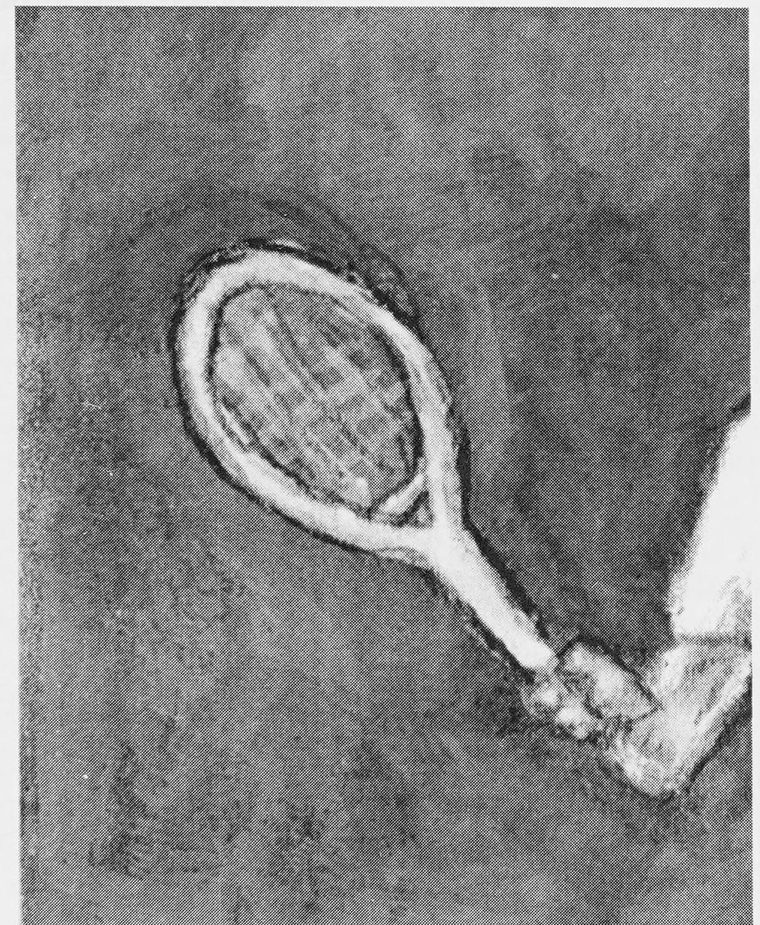
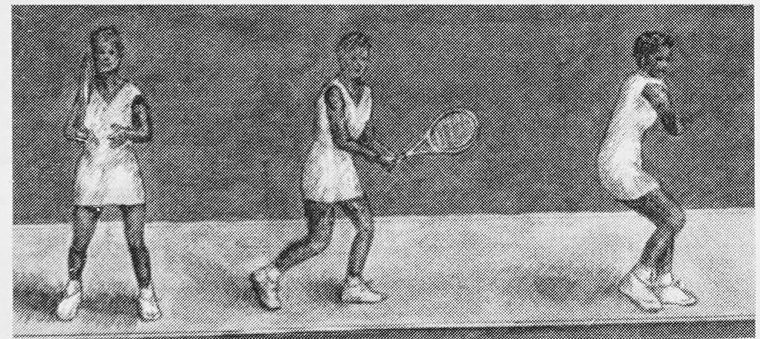
Các động tác đưa vợt ra sau phổ biến nhất là:
Đưa vợt thẳng ra sau
vung vợt ra sau dễ dàng và nhanh chóng, nhưng tạo ra độ xoáy không nhiều. Gia tốc đầu vợt được tạo ra chủ yếu từ cú vung tay về phía trước. Vì thế cần có một cánh tay mạnh mẽ. Được sử dụng chủ yếu để trả giao bóng nhanh và đánh bóng khi đang chạy, chẳng hạn như vô-lê.
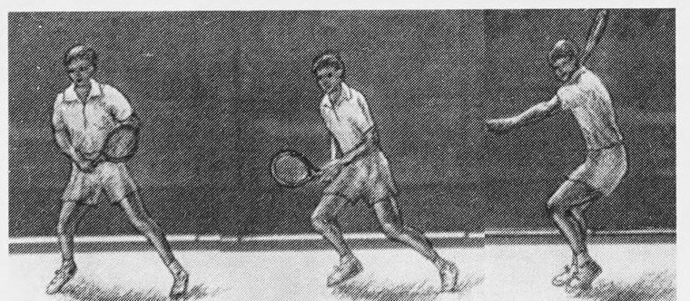
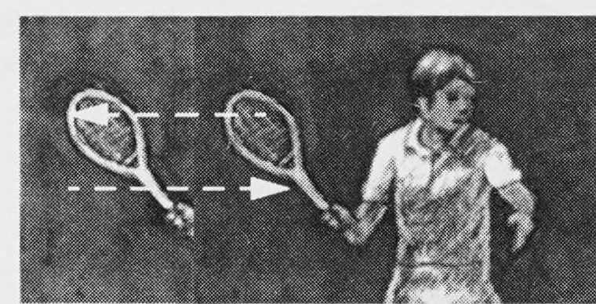
Đưa vợt xuống
Cũng giống như động tác vung vợt về phía sau thẳng, động tác này nhanh chóng và khá dễ dàng. Tạo ra xoáy lên tốt, nhưng nếu đánh muộn nó có thể trở thành một cú giật (vợ đánh vào dưới bóng, rời đi với quỹ đạo đi lên và không có xoáy). Hãy đảm bảo rằng, nếu bạn sử dụng kiểu đánh lùi này, không tiếp tục lùi xa hơn mức cần thiết (đầu vợt phải hướng về phía sau), nếu không, vợt sẽ đi lên phía sau bạn và một cú đánh cắt lát (xoáy xuống) sẽ được tạo ra.
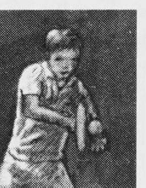
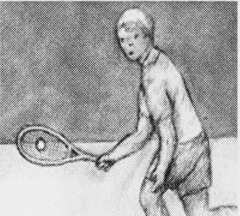
Đưa vợt vòng lặp
Sự lựa chọn của hầu hết các chuyên gia. Nhịp điệu, khả năng tăng tốc và tạo ra xoáy lên tuyệt vời. Vợt được đưa về với một cú giật cao. Khi bạn chuẩn bị thực hiện cú vung về phía trước, vợt dễ dàng rơi xuống nhờ trọng lực (trọng lượng vợt) và tăng tốc đến điểm tiếp xúc.
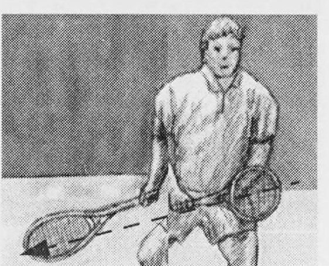
Cú giật “C” nhỏ gọn (Ở mặt trái tay, trông giống như chữ “C” đảo ngược)
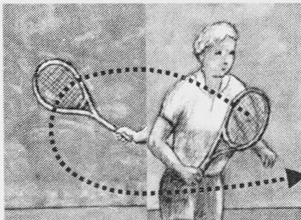
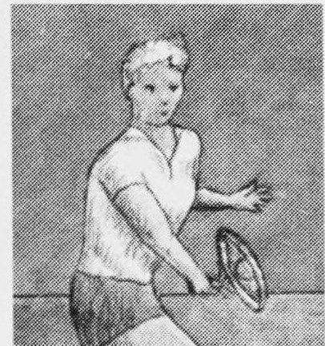
Vòng lặp “C” mở rộng.
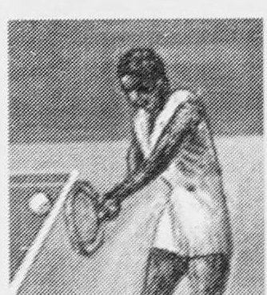
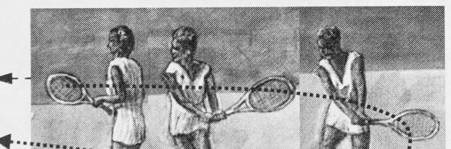
Xoay dưới mức của quả bóng tới để tạo ra xoáy lên tốt (xem “Xoay” ở Chương 1).
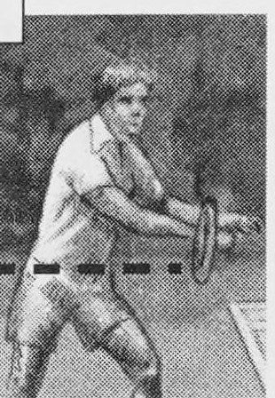
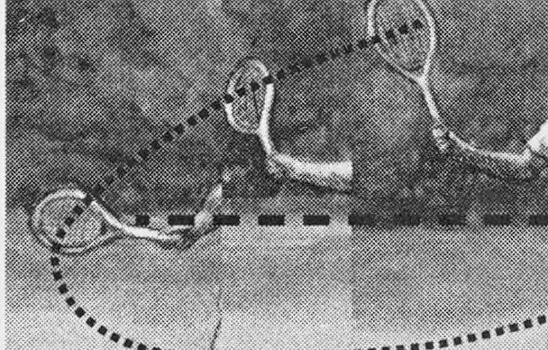
Xem Vị trí sẵn sàng trong chương “Các tư thế”
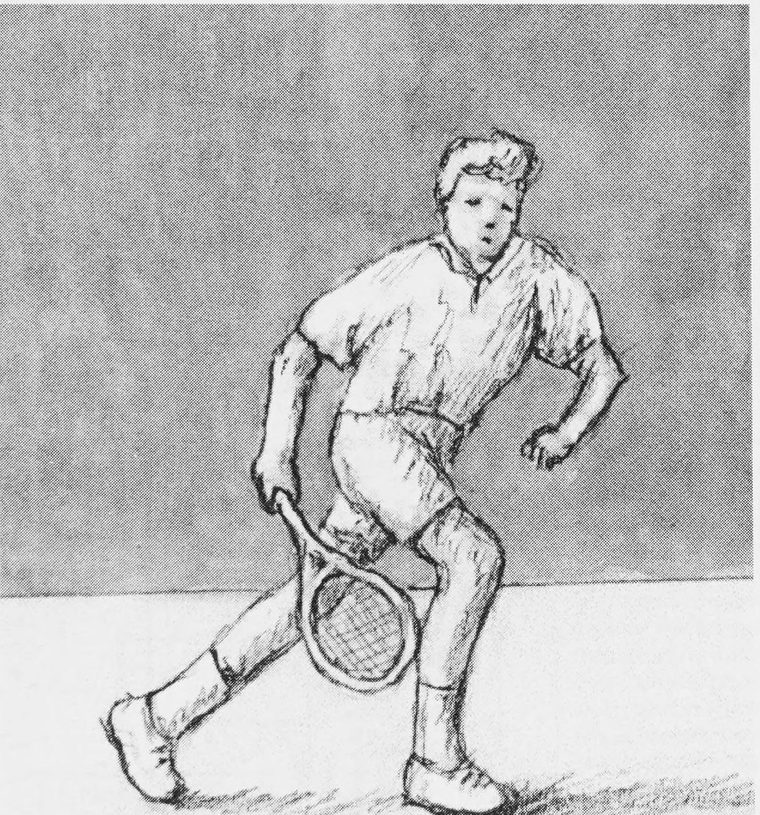
Chương 3
Phán Đoán & Bộ Chân
Nghệ thuật đọc trận đấu: quan sát mặt vợt đối phương, dự đoán cú đánh tiếp theo và bộ chân phản ứng (bước nhún, bước chéo carioca).
Nhận ra nơi đối thủ dự định nhắm vào cú đánh tiếp theo là một vũ khí lớn chống lại chiến lược của anh ta. Dự đoán sẽ vô hiệu hóa cuộc tấn công của anh ta (giữ bóng hiệu quả) và có thể buộc anh ta vào một kế hoạch phòng thủ, chuyển phần trăm sang phía bạn (lối chơi tấn công hoặc tấn công có tỷ lệ thành công cao hơn lối chơi phòng thủ).
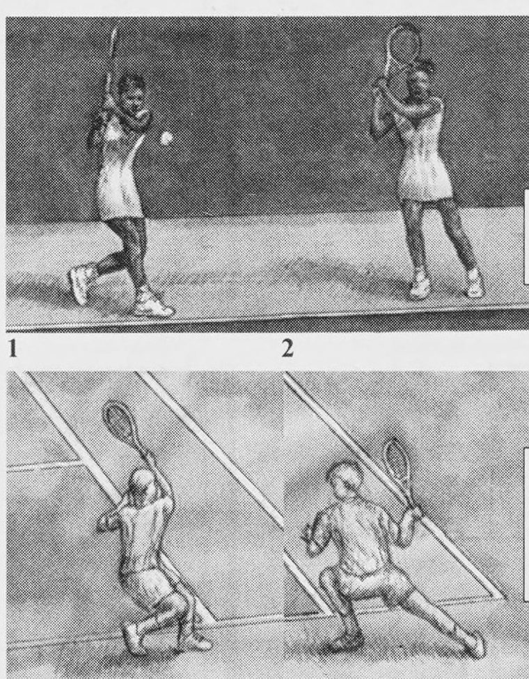
Phán đoán dựa trên:
Đang hồi vị về “Điểm hồi vị.
Quan sát mặt vợt đối phương (phản ứng nhanh hơn).
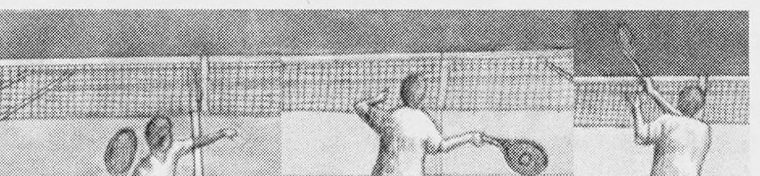
Tìm hiểu về cú đánh tiếp theo có thể thực hiện được.
Bộ chân. Bắt bóng sớm.
Cũng cần lưu ý:
Hiểu tác động của độ xoáy.
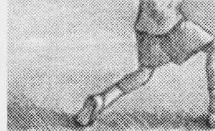
Lối chơi của đối thủ (đặc biệt là khi chịu áp lực).
Một số người chơi có xu hướng có những kiểu đánh bóng cụ thể và một cú đánh cụ thể khi bị áp lực. Nhận biết những cú đánh và kiểu chơi đó sẽ giúp bạn dự đoán cú đánh tiếp theo của đối thủ và do đó, kiểm soát được điểm.
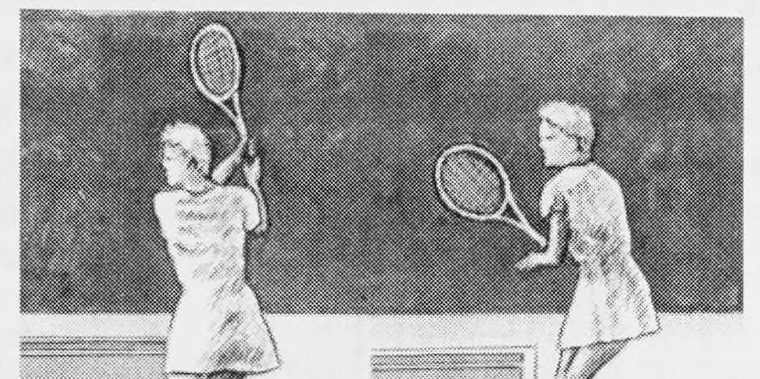
Âm thanh cú đánh của đối thủ (đánh bóng để tạo xoáy).
Tốc độ và độ cao của bóng.
1. Hồi vị (và bao quát sân)
Vị trí của bạn trên sân phụ thuộc vào cú đánh được thực hiện của bạn. Vì lý do này, sau mỗi cú đánh, bạn sẽ cần biết đâu là vị trí tốt nhất trên sân để định vị bản thân (phục hồi) để có thể tiếp cận bất kỳ cú đánh nào của đối thủ.
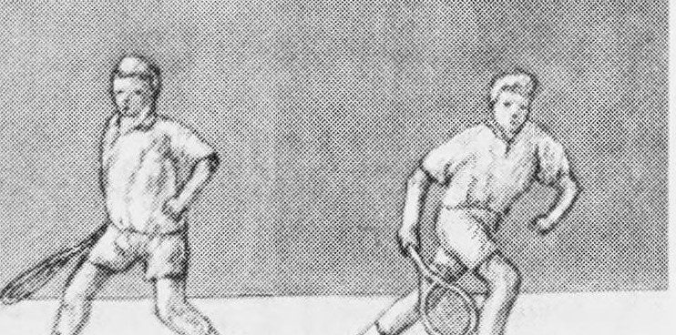
Bởi vì bạn chỉ cần bao quát một vài thước (từ giữa sân), bạn có thể nghĩ rằng chỉ với tốc độ và khả năng tăng tốc thì có thể bao phủ tốt toàn bộ sân, nhưng:
Việc hồi vị về “Điểm hồi vị” sẽ khiến tốc độ của bạn trở thành thứ yếu và sẽ giúp bạn bao quát sân một cách dễ dàng và hiệu quả. Bằng cách quay trở lại vị trí chính xác, bạn sẽ tiết kiệm được các bước và do đó, kế hoạch chiến thuật của bạn sẽ trở nên quan trọng (đến bóng sớm và thực hiện cú đánh đã chọn).
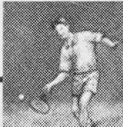
Tốc độ và khả năng tăng tốc (cũng như sự nhanh chóng của bước đầu tiên) vẫn là những yếu tố không thể thiếu để bao quát tốt sân đấu.
“Điểm hồi vị” phụ thuộc vào cú đánh được thực hiện.
“Điểm hồi vị” nằm ở trung tâm tầm với của bất kỳ cú đánh nào của đối thủ có thể xảy ra.
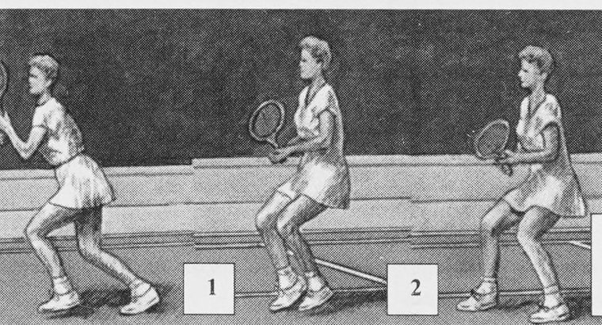
Hồi vị về điểm 1 (giữa) sau một cú đánh thẳng vào giữa sân để đạt được kết quả trả bóng tốt nhất có thể.
Hồi vị về điểm 2 (trái từ giữa) sau một cú đánh từ tuyến dưới để đạt được kết quả quay trở lại tốt nhất có thể.
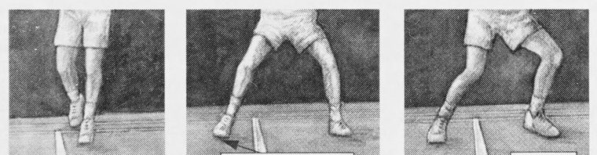
Hồi vị về điểm 3 (ngay từ giữa) sau cú đánh chéo sân để đạt được cú trả bóng tốt nhất có thể.
Cách hồi vị
Để phục hồi nhanh chóng và hiệu quả, chân sau trong mỗi cú đánh vuông góc và ở tư thế đóng bước ra bên ngoài và đẩy ra để di chuyển đến “Điểm hồi vị” hoặc vượt qua các bước để chạy đến cú đánh tiếp theo.
Xáo trộn khi “Điểm hồi vị” không còn xa, như trong một cuộc đánh chéo sân.
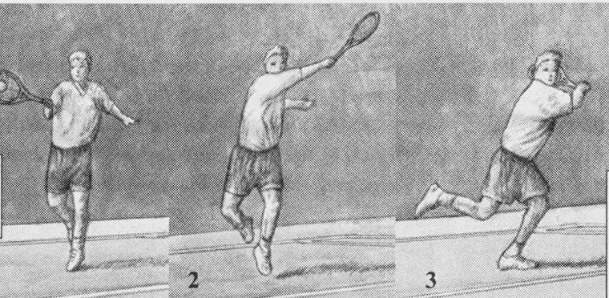
Bước chéo khi bạn ở xa “Điểm hồi vị” và cần phải phục hồi nhanh chóng.
2. Quan sát mặt vợt đối phương
Khi đang thực hiện bước nhún (chân cách mặt đất), mắt bạn phải nhìn vào mặt vợt của đối phương khi anh ta đánh bóng. Hành động này sẽ cung cấp cho bộ não của bạn đủ thông tin, khi bạn tiếp đất, để bắt đầu di chuyển sớm (hoặc ít nhất là phản ứng) về phía khu vực mục tiêu dự định của đối thủ cũng như giúp bạn đọc được tốc độ, độ xoáy và độ cao của cú đánh (tức là mặt vợt mở báo hiệu một cú lốp bóng).
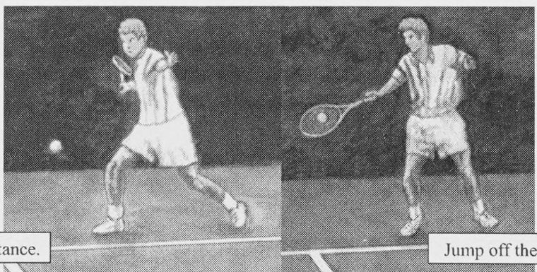
Khi bóng của đối phương đi qua lưới, bạn phải chuẩn bị sẵn sàng để thực hiện cú đánh (chuẩn bị sớm) vào khu vực mục tiêu của đối phương, chờ bóng nảy về phía mình.
Ngoài ra, hãy lưu ý đến vị trí của đối thủ trên sân (cú đánh tiếp theo có thể xảy ra), manh mối từ cách cầm vợt, thế đứng, vung vợt sau và vị trí tung bóng khi giao bóng.
3. Phán đoán cú đánh tiếp theo
Hiểu được cú đánh tiếp theo có thể xảy ra sẽ không chỉ giúp bạn tiếp cận bóng sớm mà còn cho phép bạn chơi theo chế độ “thí điểm tự động”, do đó, sẽ dẫn bạn chơi trong “khu vực”. Chơi trong “khu vực” là cách diễn đạt mà các cầu thủ chuyên nghiệp sử dụng khi họ chơi trong vùng thoải mái (điểm tiếp xúc hoàn hảo), nơi mọi cú đánh đều hiệu quả, bộ chân nhanh và linh hoạt (nhẹ nhàng) và cảm giác tổng thể tốt. Lưu ý rằng tất cả các ví dụ đều có thể đảo ngược.
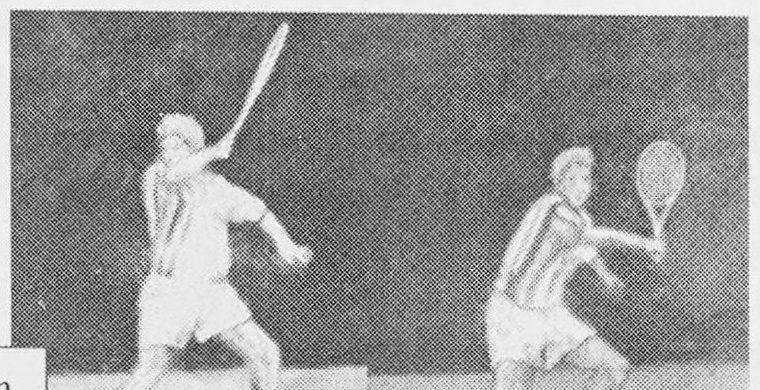
Khi bạn tấn công bằng một cú đánh phạt góc sâu và di chuyển vào lưới, đối thủ của bạn có thể gặp rắc rối với một cú lốp bóng.
Trong một pha đánh bóng chéo sân, quả bóng ngắn đầu tiên có thể là đường dọc + đi vào lưới.
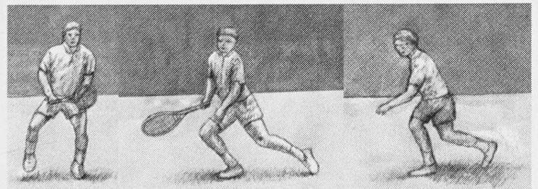
Khi bạn bị đẩy sâu về phía sau đường cuối sân, hãy chờ đợi một cú đánh rơi (đặc biệt là trên mặt sân chậm như sân đất nện).
Nếu chuyển động của bạn không tốt nhất hoặc bạn không phục hồi tốt, đối thủ của bạn có thể cố gắng di chuyển bạn xung quanh sân, sang sân mở.
Trong hầu hết các trường hợp, tỷ lệ phần trăm cao các cú dứt điểm sẽ đến phần sân mở.
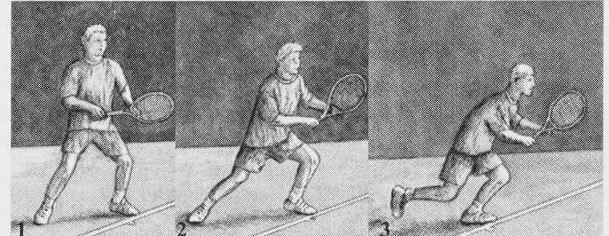
Sau khi thực hiện một cú vô-lê dọc biên, di chuyển theo đường chéo về phía trước như thể đang theo bóng, cắt góc, che bất kỳ cú vô-lê nào có thể có của đối phương (thông thường nếu cú vô-lê là một cú đánh ép buộc, đối thủ của bạn sẽ trả lại một cú vô-lê yếu, ngắn hoặc rơi vào kiểu chơi “chịu áp lực”).
Khi thực hiện cú đánh bỏ nhỏ, hãy di chuyển đến để che chắn cú đánh rơi hoặc cú đánh trả góc của đối thủ.
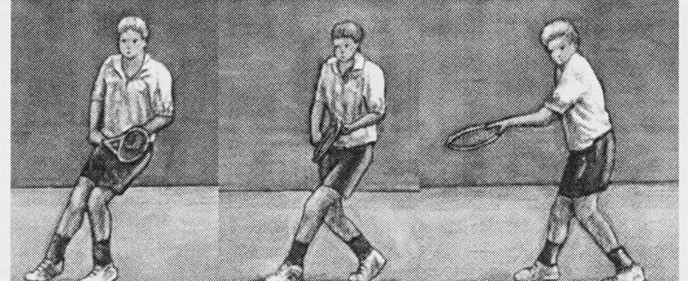
Đồng thời xem xét những gì đối thủ của bạn có thể không làm trong từng tình huống cụ thể (loại bỏ các khả năng).
4. Bộ chân
Bộ chân là yếu tố chính dẫn đến thành công trong hầu hết mọi môn thể thao, nhưng trong quần vợt, bộ chân có hiệu suất cao là đặc biệt cần thiết. Quần vợt là một lối chơi có những tình huống khẩn cấp liên tục, trong đó mỗi cú đánh có thể được thực hiện ở tốc độ, độ xoáy, độ cao và vị trí khác nhau.
Do đó, phải nhanh nhẹn và nhanh nhẹn (cũng như có thể giữ thăng bằng động) là điều bắt buộc để thực hiện tất cả các loại bước và chuyển động cụ thể cần thiết để tiếp cận bóng sớm.
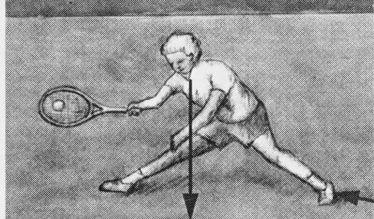
Làm cách nào mà các chuyên gia khiến cho việc chạy và tiếp cận mọi quả bóng trở nên dễ dàng đến vậy? Làm thế nào họ có thể luôn ở đúng nơi vào đúng thời điểm? Câu trả lời là họ đoán trước được cú đánh tiếp theo và họ không bao giờ ngần ngại khi điểm đang diễn ra. Họ duy trì sự di chuyển liên tục: tách bước/phản ứng, nhận bóng, thu hồi.
A. Bước nhún / Phản ứng
Phản ứng nhanh (ra quyết định nhanh và tốc độ phản ứng nhanh)
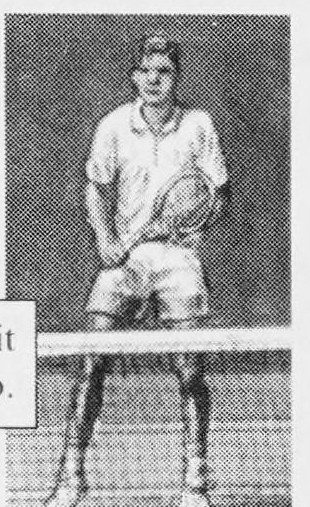
Bước nhún tạo nền tảng để phản ứng với quả bóng tiếp theo, đưa bạn từ vị trí cân bằng sang vị trí giống như lò xo. Phản ứng này sẽ diễn ra sau bước bùng nổ đầu tiên. Nó bắt đầu như một cú nhảy nhỏ trong không khí. Việc này nên được thực hiện mọi lúc trong thời điểm, ngay trước khi vợt của đối thủ tiếp xúc với bóng.
Thời gian là thành phần quan trọng nhất của bước phân tách. Khi bóng chạm dây vợt đối phương, bạn phải đứng trên mặt đất (1). Khi bạn tiếp đất (2), cơ thể bạn tích trữ năng lượng (và vào vị trí cân bằng) và do đó bạn có thể di chuyển nhanh chóng theo bất kỳ hướng nào, tùy theo cú đánh của đối thủ (bao gồm di chuyển lùi để thực hiện cú đánh qua đầu và tiến về phía trước để thực hiện cú vô-lê).
Lưu ý: Đảm bảo không thực hiện bước nhún sau khi bóng rời khỏi dây vợt đối phương. Đó là lý do tại sao bạn nên thực hiện chia tách ngay trước điểm tiếp xúc thực sự của đối thủ.
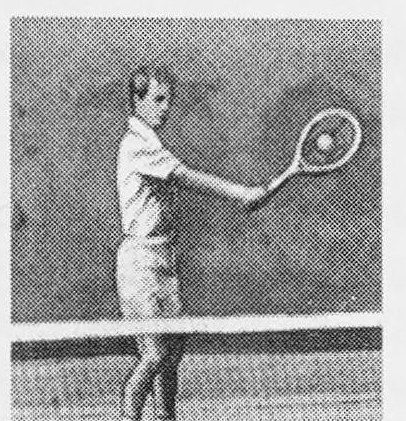
Khi tiếp đất, bạn không được ngã bằng cả hai chân cùng một lúc. Sẽ hiệu quả hơn nếu tiếp đất bằng chân đối diện trước để có được cú đánh mong muốn. Ví dụ, đối với cú thuận tay, người chơi thuận tay phải nên tiếp đất trước bằng ngón chân trái, như vậy bàn chân sẽ đẩy ra, tạo điều kiện và chuẩn bị cho việc xoay vai cho cú đánh tới (việc đầu tiên ngay sau bước xoạc bóng) và ngược lại đối với cú đánh trái tay.
Sử dụng bước nhún bước cũng giúp bạn để mắt đến bóng, đặc biệt là ở điểm tiếp xúc của đối phương, tối đa hóa khả năng dự đoán của bạn (cũng như giúp bạn giữ nhịp với bóng) và giữ thăng bằng, từ đó giúp bạn di chuyển tốt.
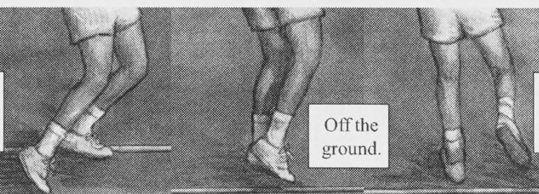
Bạn không cần phải lúc nào cũng đứng trên đôi chân của mình mà một bước nhún hiệu quả sẽ bắt đầu và kết thúc bằng các ngón chân.
Hãy nhớ: Lý do bạn tách ra là để đến cảnh tiếp theo nhanh hơn, vì vậy đừng tách ra và ở lại — tách ra và phản ứng (di chuyển).
B. Di chuyển tới bóng
Cú đánh nền
Nếu bóng ngắn, hãy tấn công bằng cách di chuyển nhanh về phía trước và đánh bóng bằng chân trước. Để có cú đánh mạnh mẽ hơn, người chơi nâng cao có thể nhảy bằng chân trước (phải duy trì cân bằng động), ngã trên cùng một chân trước và tiếp tục tiến về phía trước.
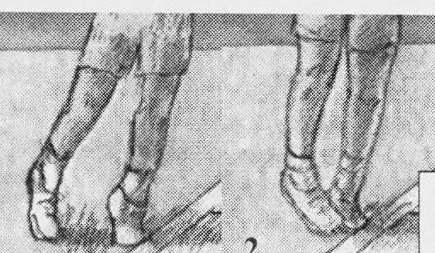
Nếu bóng ở sâu trong sân và phía sau bạn, hãy thực hiện một cú đánh phòng thủ bằng chân sau nhưng chuyển trọng lượng của bạn sang chân trước. Để có một cú đánh phòng thủ tích cực hơn, những người chơi nâng cao có thể nhảy bằng chân sau (phải duy trì sự cân bằng động), tiếp đất bằng cùng một chân sau và sau đó chuyển trọng lượng về phía trước sang chân trước (thường là thuận tay).
Nếu bóng ở gần bạn, bước xáo trộn bước sang bên là động tác hiệu quả nhất, bởi vì khi bạn tiếp cận được bóng, bạn sẽ sẵn sàng thực hiện một cú đánh ở tư thế mở hoặc một cú đánh vuông góc nếu bạn bước về phía trước. Sau khi xáo trộn, vai của bạn phải xoay tương ứng (thuận tay hoặc trái tay). Xáo trộn cũng là một chuyển động dễ dàng và tự nhiên cho phép bạn quan sát đối thủ (đặc biệt là tại điểm tiếp xúc của anh ta) khi bạn di chuyển về phía quả bóng hoặc
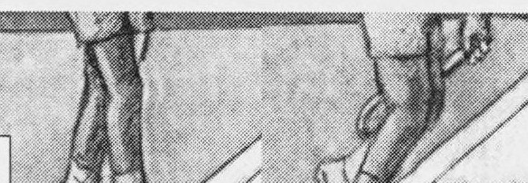
Trên sân đất nện, luôn có độ trượt nhất định. Nếu bạn chơi với tư thế vuông góc, thay vì bước về phía trước như khi chơi trên sân cứng, hãy trượt chân trước, từ đó tạo ra thế đứng ổn định hơn. Ngoài ra, trong các cú chạm đất, khi bạn đến gần bóng, hãy luôn thực hiện các bước điều chỉnh nhỏ để tinh chỉnh khoảng cách giữa bạn và bóng nhằm có điểm tiếp xúc nhất quán.
Nếu bóng ở xa bạn, ngay sau bước nhún chân (1), trước tiên hãy xoay vai tương ứng bằng cách dồn trọng lượng lên chân bên ngoài hoặc phía bạn đang chạy tới (2), đồng thời trượt chân đó về phía giữa trọng lượng cơ thể của bạn (Bước thả).
Khi bạn sang ngang, sử dụng bước chéo, chạy tới bóng với các bước rộng, di chuyển cả hai tay để tăng tốc tới bóng (3). Sử dụng vợt để giữ thăng bằng khi bạn di chuyển tay. Sau khi bạn tiếp cận được quả bóng, cần phải thực hiện các bước tinh chỉnh nhỏ để tạo ra điểm tiếp xúc hoàn hảo. Mắt phải tập trung vào bóng và đầu giữ cố định trong suốt cú đánh.
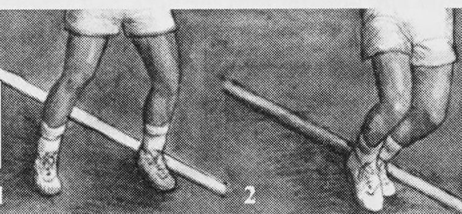
Để có phản ứng bùng nổ về phía trước trên sân đất nện, hãy trượt chân sau để dựng chân trước (tải chân trước).
Cú thuận tay từ trong ra ngoài là một cú đánh thuận tay từ vị trí trái tay (chạy quanh trái tay). Đó là một cú đánh rất mạnh mẽ, nhưng đòi hỏi bộ chân nhanh nhẹn và lùi nhanh để đặt vai và sẵn sàng đánh bóng. Nó thường được đặt sâu trong góc trái tay của đối phương (tay vợt thuận tay phải) hoặc gần giao điểm của đường biên đánh đơn và đường giao bóng để mở sân.
Trên sân đất nện, việc chạm bóng rộng phức tạp hơn trên sân cứng. Trượt là điều bắt buộc vì lý do rõ ràng là bạn không thể dừng quán tính của cơ thể như trên sân cứng. Điểm tiếp xúc phải được thực hiện ở cuối trang trình bày: nếu không bạn sẽ đi quá xa “Điểm hồi vị.
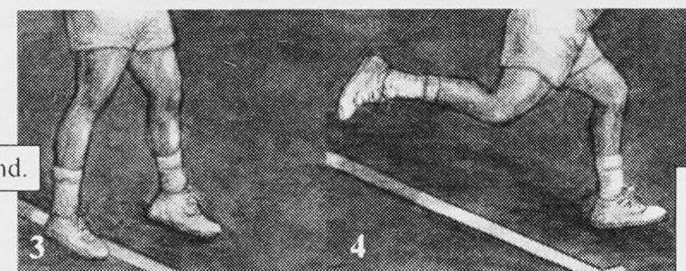
Các cú đánh ở tư thế mở tạo nền tảng vững chắc cho việc trượt. Tư thế vuông góc mất nhiều thời gian hơn để phục hồi do cần phải bước thêm (bước chân lùi ra bên ngoài). Đối với cả hai tư thế, để trượt hiệu quả, trọng lượng của bạn phải được phân bổ đều ở tâm cân bằng, giữ cơ thể khá thấp để tiếp đất nhiều hơn mà không làm mất thăng bằng. Yếu tố kiểm soát độ dài của đường trượt là cách trọng lượng của bạn được chuyển sang chân sau. Bạn càng đặt nhiều trọng lượng lên bàn chân sau thì bạn càng bị gãy. Nếu trọng lượng dồn lên chân trước, bạn sẽ không thể trượt được (mất thăng bằng động). Điều quan trọng là phải giữ đầu cố định trong suốt quá trình trượt để mắt bạn có thể tập trung vào quả bóng và bạn có thể duy trì sự cân bằng động.
Đánh bóng khi đang chạy hết tốc lực
Lý tưởng nhất là bạn nên thực hiện động tác chân nhanh, bùng nổ (đặc biệt là bước đầu tiên) để tiếp cận bóng sớm và có thời gian dừng lại và đánh bóng cân bằng. Ngày nay, những tay vợt hàng đầu rất mạnh mẽ nhờ tập luyện phối hợp, chế độ ăn uống hợp lý và công nghệ vợt, vì vậy một số cú đánh có thể được thực hiện hoàn toàn trong khi vẫn giữ được sự cân bằng động và tạo ra một cú đánh rất quyết liệt (ngay cả khi đứng ở tư thế đóng, bất cứ khi nào cần thiết). Trong những tình huống rất khó khăn, khi sức mạnh không thể được tạo ra nhiều, lốp bóng là một giải pháp tốt.
Các cú chạy nên được đánh bằng chân trước vì nhiều lý do:
Thuận tay
Khi chạy hết cỡ, quán tính sẽ đưa bạn đi một hoặc nhiều bước, do đó, điểm tiếp xúc nằm ngoài bàn chân trước, bước tiếp theo sẽ là bằng chân sau. Điều này giúp bạn có được vị trí hoàn hảo để đến “Điểm hồi vị” bằng cách sử dụng chân sau để thực hiện bước chéo. Nó cũng giúp ngăn cơ thể bạn tiếp tục chạy (quán tính).
Cú đá bằng chân trước sẽ truyền phần lớn năng lượng (trọng lượng) tiềm năng của bạn vào cú đánh. Hông sẽ chỉ xoay khi bước thêm (bước chân sau ra bên ngoài), tạo thêm lực và gia tốc khi thực hiện bước tiếp theo.
Khi điểm tiếp xúc muộn hoặc phía sau, cú đánh bằng chân sau vẫn rất hiệu quả ở phía thuận tay (đặc biệt là nhắm dọc theo đường biên) do vị trí của vai thuận (vai phải ở phía sau đối với người chơi thuận tay phải).
Những người chơi có tư thế thuận tay mở sẽ khó đánh bóng hơn và chuyển trọng lượng về phía trước (tư thế mở cần phải gần bóng hơn so với tư thế đóng hoặc vuông).
Trái tay
Những cú trái tay bằng một hoặc hai tay khó đánh bằng chân sau hơn nhiều do vị trí của vai thuận (vai phải ở phía trước đối với người chơi thuận tay phải). Khi bóng bị đập ra khỏi chân sau, trọng lượng không thể chuyển về phía trước.
Vô-lê
Nếu bóng đánh ngay vào người bạn
Nếu bóng ở quá xa
Khi quả bóng ở quá xa tầm với của bạn và bộ chân tốt không thể tạo ra sự khác biệt, phương án cuối cùng là một cú vô-lê đâm, rất có thể sẽ tạo ra một cú vô-lê.
Để thực hiện một cú lao nhanh và hiệu quả, sau bước nhún, trước tiên hãy di chuyển bằng chân bên ngoài về phía cú đánh (Bước Jab lớn) khi bạn đẩy ra bằng chân kia, sau đó dùng chân đó vượt qua để cuối cùng chạm được bóng hoặc để kiểm soát thăng bằng cơ thể. Mặt vợt vẫn thẳng đứng nhất có thể trong suốt điểm tiếp xúc. Tay còn lại luôn giúp kiểm soát thăng bằng cơ thể (thuận tay và trái tay).
Lưu ý: Việc khôi phục các kiểu bộ chân và định vị (hồi vị về “Điểm hồi vị”) cho tất cả các cú vô-lê được thực hiện dưới dạng bộ chân.
Giao bóng
Có nhiều lựa chọn bộ chân về cách bắt đầu giao bóng và tất cả chúng đều có thể chấp nhận được. Những gì bạn chọn chỉ là vấn đề sở thích, và cuối cùng, nếu nó nhất quán, nó sẽ trở thành một phần phong cách của bạn. Các kiểu bộ chân phổ biến nhất là:
Đẩy chân trước ra và tiếp đất bằng chân đó trong sân, theo sau bằng chân sau (phải) về phía trước, sẵn sàng thực hiện tách bước hoặc tiếp tục chạy về phía trước để thực hiện lối chơi “giao bóng & vô-lê”.
Đơn giản và hiệu quả cho mọi phong cách lối chơi.
Tuyệt vời cho kiểu lối chơi “giao bóng & vô-lê” (dễ thực hiện tốt trong sân, do đó, dễ tiếp cận lưới) hoặc cho những cú giao bóng mạnh mẽ (tạo ra góc và động lượng chuyển tiếp tốt).
Đẩy chân trước và tiếp đất bằng chân sau trước tiên trong sân, sau đó là chân trái, chuẩn bị thực hiện bước nhún.
Góc xoay thân người tốt.
Hiệu quả nếu quay lại loại lối chơi cơ bản.
Kéo chân sau về phía sau của chân trước và đẩy ra từ chân trước, tiếp đất trước bằng chân trước trong sân và theo sau bằng chân sau (phải) về phía trước, chuẩn bị thực hiện bước nhún hoặc tiếp tục chạy về phía trước để thực hiện lối chơi “giao bóng & vô-lê”.
Tạo độ xoáy tuyệt vời nhờ cả hai chân đẩy mạnh lên trên đồng bộ với cánh tay.
Tuyệt vời cho thể loại lối chơi “giao bóng và vô-lê”. Nó không chỉ có thể tạo ra xoáy lên mạnh mẽ mà còn bằng cách ngã bằng chân trước ở bên trong sân, sau đó là chân sau (phải), bạn còn có thể tạo ra xung lượng góc và xung lượng về phía trước, do đó, cho phép bạn tiếp cận lưới nhanh chóng.
Hạn chế duy nhất là thiếu thăng bằng do phần đế nhỏ hình thành khi bàn chân sau bị kéo về phía sau của bàn chân trước.
Đỡ giao bóng
Mặc dù cú trả giao bóng là một cú đánh hoàn toàn khác với cú vô-lê, nhưng kiểu bộ chân cũng tương tự.
Đập trên cao
Cách lùi về sau
Bằng cách lùi lại bằng chân phải (cũng là chân cầm vợt) ngay sau bước nhảy, bạn không chỉ thoát khỏi lưới nhanh hơn mà còn vì bạn bị xoay sang một bên nên bạn cũng đang chuẩn bị cho động tác bước lùi nhanh, nhanh.
Khi bạn đã quay mặt sang một bên, hãy di chuyển bước sang bên hoặc bước chéo để lùi lại.
Nếu bóng vẫn ở quá cao vào thời điểm bạn cần tiếp xúc, hãy sử dụng động tác nhảy cắt kéo hoặc nhảy thẳng. Cú nhảy thẳng thường được sử dụng nhiều hơn với bước xáo trộn bước ngang và khó duy trì sự cân bằng động trong suốt cú đánh (không có góc xoay và khó chuyển trọng lượng về phía trước).
Cú lên lưới
Bởi vì bạn cần tiếp cận bóng ở độ cao tối đa của độ nảy của nó và do đó bạn có thể tiếp cận lưới càng sớm càng tốt để giảm thời gian phản ứng của đối thủ, hiệu quả bộ chân là yếu tố quan trọng nhất để có một cú đánh tiếp cận tốt.
Nhảy bằng chân trước?
Những cú đánh tiếp cận rất quyết liệt.
Tốt nhất cho các cú đánh xoáy lên và trái tay bằng hai tay.
Bước carioca
Tốt nhất cho các cú đánh trái tay bằng một tay.
Bước carioca (bước chân sau ra sau chân trước) xảy ra ngay sau điểm tiếp xúc, cho phép hông giữ ngang trong suốt cú đánh cắt ở trái tay một tay, và do đó cho phép bạn đánh xuyên qua cú đánh (mà không dừng lại hoàn toàn), tạo ra xoáy xuống tốt với độ chính xác.
Trên cú cắt trái tay bằng một tay, thực hiện bước carioca sau điểm tiếp xúc (như được thực hiện theo sau).
Ở cú cắt thuận tay và cú trái tay bằng hai tay (cắt và xoáy lên), bàn chân sau bước lên phía trước bàn chân trước. Bước này diễn ra trước điểm tiếp xúc, giúp bạn di chuyển qua và di chuyển nhanh hơn về phía lưới.
Chạy đuổi bóng bổng
1. Nhận biết sớm
Ngay sau bước nhún, nhận ra rằng đó là một cú lốp bóng (cú đập từ trên cao không thể tiếp cận).
2. Quay người và chạy
Nhanh chóng lùi về phía sau bằng bước lùi (cùng chân cầm vợt) để lốp bóng hướng qua đầu hoặc qua phía thuận tay của cơ thể bạn, và lốp bóng dọc theo cạnh của bóng (không phải ngay dưới bóng) trong khi vẫn quan sát bóng. Nếu bóng đi qua phía trái tay, chỉ cần quay lại và đưa bóng xuống.
Chạy nhanh hơn đường bay của quả bóng để đuổi theo nó (đánh bóng).
Luôn chạy lùi một bước nhiều hơn mức cần thiết vì việc điều chỉnh tiến lên ở giây cuối cùng sẽ dễ dàng hơn nhiều so với việc chạy muộn.
3. Điểm tiếp xúc
Đánh bóng phù hợp (tùy thuộc vào phía nào của bóng), xoay cơ thể 180 độ (hướng về phía lưới), xoay chân sau (thuận tay và trái tay).
Mặt vợt nên hơi mở ra để đánh trả một cú lốp bóng sâu.
4. Đưa vợt theo bóng
Theo dõi khi cơ thể tiếp tục quay.
Trọng lượng nên được chuyển sang chân trước.
Hoàn thành ở vị trí cao để có chiều cao và chiều sâu tốt.
5. Hồi vị
Cú bỏ nhỏ
Không thực hiện cú đánh rơi khi chạy hết tốc lực. Trước điểm tiếp xúc, hãy giảm tốc độ của bạn vì cánh tay, cổ tay và vợt sẽ hấp thụ phần lớn năng lượng để tạo ra cú đánh rơi hiệu quả.
Trên sân đất nện, tiếp xúc với bóng ở cuối đường trượt.
Xem quyển 4, chương “Chiến lược đột phá”
Xem quyển 3, chương “Lob”.
’ Xem quyển 4, chương “Chiến lược bổng bóng”
Chương 4
Độ Xoáy Bóng
Cơ học của các loại xoáy — xoáy trên, xoáy dưới/cắt và phẳng — khi nào nên dùng, cách tạo và cách đối phó với từng loại.
Tối đa hoá kiểm soát: Độ xoáy
Độ xoáy có thể được sử dụng vì một số lý do. Bằng cách tận dụng xoáy trên, một số người chơi có thể hung hãn hơn. Những người khác, như những người chơi phòng ngự, sử dụng nhiều chiến thuật phòng thủ hơn, khai thác xoáy dưới. Nhưng còn nhiều hơn thế nữa khi quả bóng quay. độ xoáy của quả bóng có thể cho bạn biết quả bóng sẽ nảy lên như thế nào khi chạm đất. Số độ xoáy của quả bóng cũng có thể cho bạn biết về đường bay và độ sâu của nó (cùng với tốc độ và độ cao của cú đánh của đối thủ). Bạn có thể đoán trước cú đánh tốt hơn nếu bạn hiểu được vòng xoáy khi nó bay về phía bạn và do đó, bạn có thể chuẩn bị tốt hơn cho cú đánh tiếp theo.
Ngoài ra, sự kết hợp của độ xoáy nặng (xoáy lên), sức mạnh và khối lượng (cơ thể và trọng lượng vợt của bạn truyền vào bóng tại thời điểm đánh) tạo ra một quả bóng nặng. Kiểu đánh này là cú đánh nâng cao, khó thực hiện hơn nhiều so với cú đánh phẳng hoặc xoay nhẹ.
Vì vậy, nếu độ xoáy điều khiển đường bay của quả bóng và bạn điều khiển độ xoáy thì bạn sẽ kiểm soát được điểm.
Các cú đánh
Xoáy trên (Nhìn ngang)
Hiệu ứng của độ xoáy:
Tăng áp suất không khí lên trên quả bóng, khiến quả bóng rơi nhanh.
Bóng bật ra khỏi mặt sân nhanh hơn, cao hơn và xa hơn (đá lên) so với cú đánh phẳng.
Lợi ích:
Một cú đánh có độ xoáy cực cao có thể vượt qua đầu, tạo ra một cú đánh khó đánh trả, cũng như giữ đối thủ của bạn ở sâu.
Cú đánh mạnh mẽ có thể buộc đối thủ của bạn phải lùi lại một cách yếu ớt.
Dễ dàng phá lưới vì bóng có xu hướng ở lại sân.
Đối phó với người đánh xoáy trên:
Cú đánh xoáy lên của đối thủ sẽ đẩy bạn về phía cuối sân, vì vậy hãy đảm bảo rằng cú đánh của bạn không ngắn, trả sâu theo tốc độ; nếu không, đối thủ sẽ tấn công những cú đánh nông của bạn.
Cố gắng đưa bóng lên cao. Bằng cách này, bạn có thể ở gần hoặc bên trong đường cuối sân và duy trì khả năng tấn công của mình.
Lưu ý độ xoáy ảnh hưởng như thế nào đến độ nảy của bóng (góc tới). Nếu các cú đánh của đối phương tiếp đất ngắn (cách vạch giao bóng khoảng 60–90 cm) nhưng với độ xoáy lên cao, những cú đánh đó vẫn có thể đẩy bạn lùi xa về phía sau đường cuối sân.
Xoáy dưới — Cắt bóng (Nhìn ngang)
Hiệu ứng của độ xoáy:
Tăng áp suất không khí dưới quả bóng, khiến quả bóng nổi lên.
Bóng bật ra khỏi mặt sân chậm hơn, thấp hơn và thẳng lên (ngồi) hơn so với cú đánh phẳng.
Lợi ích:
Chuyển động trái tay tự nhiên. Tiêu hao năng lượng thấp nhờ trọng lực.
Giữ độ nảy của cú vô-lê ở mức thấp, buộc đối thủ phải đánh lên.
Sử dụng trong các pha bỏ nhỏ, bỏ nhỏ và lối chơi phòng thủ (cắt trái tay, lốp bóng).
Đối phó với người đánh xoáy dưới:
Bởi vì chuyển động xoay xoáy xuống của cú đánh của đối thủ khi nó đến với bạn có cùng chuyển động xoay xoáy lên của bạn, hãy cẩn thận (đánh xuyên qua bóng, tạo ra một tiếp xúc chắc chắn) và nhấc bóng lên thật tốt, nếu không nó có thể lọt vào lưới.
Lưu ý độ xoáy ảnh hưởng như thế nào đến độ nảy của bóng. Bạn sẽ cần phải đến gần hơn bình thường với độ nảy của một quả bóng được đánh với xoáy xuống nặng vì cú đánh đó sẽ “ngồi lên” và ở mức thấp.
Xoáy ngang (Nhìn từ phía sau)
Hiệu ứng của độ xoáy:
Tăng áp suất không khí ở bên ngoài quả bóng, khiến quả bóng dịch chuyển (đường cong) sang phải hoặc sang trái tùy theo đường cọ.
Bóng bật ra khỏi mặt sân với một đường cong rõ rệt.
Lợi ích:
Mở phiên tòa.
Kẹt hoặc tránh xa đối thủ. Khi đánh một cú thuận tay xoáy ngang về phía bên phải của đối thủ (thuận tay), bạn có thể cản trở cầu thủ và khi đánh sang trái của anh ta (trái tay), bóng sẽ rời xa anh ta (áp dụng nguyên tắc tương tự khi đánh các cú trái tay xoáy ngang).
Sử dụng hiệu quả cho các cú thuận tay từ trong ra ngoài.
Bóng phẳng (Nhìn ngang)
Hiệu ứng của độ xoáy:
Mặc dù bóng được đánh phẳng, nhưng luôn có một lượng xoáy nhỏ trên bóng.
Có rất ít hoặc không có ảnh hưởng đến góc tới sau khi bóng nảy lên.
Lợi ích:
Những cú đánh nhanh, sắc nét và quyết liệt.
Tốt để thực hiện các cú đánh ngắn và cao (qua lưới).
Giao bóng
Xoáy trên (Nhìn từ phía sau)
Kiểu cầm vợt khuyến nghị:
Cú trái tay Eastern.
Continental.
Cú trái tay Semi-Western.
Vị trí tung bóng:
Hiệu quả nhất:
Cắt bóng (Nhìn từ phía sau)
Kiểu cầm vợt khuyến nghị:
Cú trái tay Eastern.
Continental.
Vị trí tung bóng:
Ở phía trước bên phải.
Hiệu quả nhất:
Pha trộn (Nhìn từ phía sau)
Kiểu cầm vợt khuyến nghị:
Cú trái tay Eastern.
Continental.
Vị trí tung bóng:
Hiệu quả nhất:
Cú giao bóng hỗn hợp là sự kết hợp giữa xoáy lên và cú cắt. Nó dễ thực hiện và rất hiệu quả trong mọi tình huống (độ xoáy và sức mạnh tốt).
Bóng phẳng (Nhìn từ phía sau)
Kiểu cầm vợt khuyến nghị:
Continental.
Cú thuận tay Eastern (chỉ dành cho người mới bắt đầu).
Vị trí tung bóng:
Ở phía trước và hơi chếch sang phải.
Hiệu quả nhất:
Ngoài việc làm chủ các cú xoay, để tối đa hóa khả năng kiểm soát, hãy sử dụng nhiều động tác duỗi chân và xoay vai hơn cũng như ít cử động cánh tay và cổ tay hơn. Khi các khớp của cánh tay chơi và cổ tay được sử dụng với chuyển động quá mức (hoặc quá lỏng lẻo), đặc biệt là ở điểm tiếp xúc, khả năng kiểm soát sẽ bị giảm sút. Cổ tay là nguồn cung cấp lực và độ xoáy tốt, nhưng nó phải được sử dụng một cách điều độ và có kiểm soát.
Xem chương “Cách cầm vợt”
Chương 5
Cách Cầm Vợt
Toàn bộ hệ thống cán cầm bát giác: Eastern, Semi-Western, Western, Continental — cho cú thuận tay, trái tay và giao bóng.
Độ bám của vợt là nền tảng của mọi cú đánh quần vợt. Cách bạn cầm vợt sẽ ảnh hưởng đến góc của mặt vợt và vị trí của điểm tiếp xúc với cơ thể bạn (vùng đánh).
Việc lựa chọn kiểu cầm vợt rất linh hoạt và sẽ phụ thuộc vào nhiều yếu tố, chẳng hạn như chiều cao của người chơi (vùng thoải mái), phong cách chơi (loại người chơi) cũng như ý định đặt vị trí và xoay (chiến thuật). Các yếu tố khác là độ cao của cú nảy và bề mặt sân.
Lưu ý: tất cả tài liệu tham khảo về cách cầm vợt đều dành cho người chơi thuận tay phải. Người chơi thuận tay trái có thể dễ dàng chuyển đổi các ghi chú này bằng cách sử dụng chế độ xem phản chiếu (ngược lại mà không thay đổi chi tiết cụ thể).
Cách xác định các kiểu cầm vợt
Xác định phần chéo của lòng bàn tay từ gốc đốt ngón trỏ, qua giữa lòng bàn tay, đến gót chân.
Bây giờ đặt khu vực này lên cán vợt, giữ vợt ở mép vợt, theo hình minh họa.
Eastern thuận tay
Tìm nhanh:
Giữ vợt ở mép (vuông góc) bằng tay trái, bắt tay với cán vợt.
Giữ vợt ở vị trí sát cổ vợt, đặt lòng bàn tay phải phẳng trên dây và trượt vợt xuống cán vợt.
“V” được hình thành từ ngón trỏ và ngón cái ở cạnh số 2.
Ưu điểm:
Tính linh hoạt trên mọi bề mặt.
Dễ dàng tạo ra điện năng.
Cảm giác chắc chắn (phần lớn lòng bàn tay nằm ở phía sau cán vợt).
Phát triển xoáy lên tốt.
Cho cảm giác tiếp xúc bóng lâu hơn do mặt vợt thẳng đứng.
Mang đến sự linh hoạt cho các phong cách lối chơi khác nhau phát triển.
Vùng tấn công thoải mái. Điểm tiếp xúc ngay phía trước đầu gối trước ở ngang eo (giữa thân và giữa đùi).
Nhược điểm:
Đánh bóng thấp.
Tạo ra một cú đánh mà không cần điều chỉnh cổ tay.
Không tạo xoáy nếu sử dụng trong các cú giao bóng.
Eastern trái tay
Tìm nhanh:
Đặt vợt dưới nách trái và nắm vợt bằng tay phải.
Giữ vợt ở bên trái cơ thể của bạn cạnh túi, như thể đó là một thanh kiếm và nắm vợt bằng tay phải.
“V” được hình thành từ ngón trỏ và ngón cái ở cạnh số 7.
Ưu điểm:
Tính linh hoạt trên mọi bề mặt.
Phát triển xoáy lên tốt.
Cho phép cảm giác tiếp xúc bóng kéo dài do mặt vợt thẳng đứng.
Mang lại độ xoáy tuyệt vời trong các cú giao bóng (đặc biệt là đối với cú giao bóng thứ 2).
Vùng tấn công thoải mái. Điểm tiếp xúc phía trước đầu gối phía trước ở ngang eo (giữa thân và giữa đùi).
Nhược điểm:
Đánh bóng thấp.
Tạo ra một cú đánh mà không cần điều chỉnh cổ tay.
Yếu hơn cú trái tay bằng hai tay (chỉ các đầu ngón tay ở phía sau cán vợt).
Cần cơ bắp tay khỏe để tạo ra cú đánh và xoáy chắc chắn.
Western thuận tay
Tìm nhanh:
Giữ vợt ở cạnh (vuông góc), đặt lòng bàn tay phải của bạn dưới cán vợt.
“V” được hình thành từ ngón trỏ và ngón cái ở cạnh số 3.
Ưu điểm:
Nhược điểm:
Điểm tiếp xúc phải ở phía trước cơ thể và cao hơn thắt lưng.
Cần có thời điểm xuất sắc.
Cần uốn cong cổ tay (để mở mặt vợt) khi đánh bóng thấp.
Sử dụng cùng một cách cầm cho cú đánh trái tay sẽ gây căng thẳng cực độ ở khuỷu tay và cánh tay, điều này có thể dẫn đến khuỷu tay quần vợt.
Semi-Western thuận tay
Tìm nhanh:
Ở giữa cách cầm thuận tay Eastern và Western.
“V” được hình thành từ ngón trỏ và ngón cái ở giữa bảng số 2.
Ưu điểm:
Nhược điểm:
Khó thực hiện những cú đánh thấp.
Semi-Western trái tay
Tìm nhanh:
Giữ vợt ở mép nhưng hướng về phía bạn (song song với bạn) ngang tầm vai, nắm chặt cán vợt ngay.
Chữ “V” được hình thành từ ngón trỏ và ngón cái ở giữa bảng số 4.
Ưu điểm:
Nhược điểm:
Khó thực hiện những cú đánh thấp.
Continental
Tìm nhanh:
Giữ vợt ở mép, nắm cán vợt như cầm búa.
Giữ vợt ở vị trí gần cổ vợt, đặt lòng bàn tay phải của bạn lên đầu vợt và trượt hết cỡ xuống đến cán vợt.
“V” được hình thành từ ngón trỏ và ngón cái ở mép.
Ưu điểm:
Dễ dàng thực hiện các cú giao bóng, vô-lê và đập trên cao (lối chơi giao bóng lên lưới và trên lưới).
Nhược điểm:
Khó kiểm soát tốt mặt vợt khi thực hiện các cú chạm đất.
Ngoại trừ bóng thấp, tất cả các cú đánh khác đều cần có cẳng tay và cổ tay khỏe.
Cầm vợt hai tay
Trái tay
Mặc dù có thể sử dụng nhiều cách kết hợp, việc cầm vợt bằng tay dưới (phải) theo kiểu cầm Continental có lợi thế hơn các cách kết hợp khác. Kiểu cầm kiểu Continental là cách cầm được sử dụng cho cú cắt một tay, vì vậy trong trường hợp khẩn cấp, người chơi bằng hai tay có thể dễ dàng thả tay trên ra và cắt cú đánh. Điểm tiếp xúc sẽ thay đổi tùy theo tay trên (trái), ưu tiên cách cầm và độ cao của vùng đánh (vùng thoải mái).
Ưu điểm:
Tăng sức mạnh.
Lợi thế ở điểm tiếp xúc muộn (hơi chậm).
Độ xoáy và góc nhọn hơn do cổ tay tạo ra.
Hỗ trợ tốt hơn cho việc thao tác với vợt.
Hạn chế xoay quá mức, có thể dẫn đến khuỷu tay quần vợt.
Nhược điểm:
Tầm với ngắn hơn.
Khó khăn với những quả bóng gần cơ thể.
Cần động tác chân nhanh hơn và chính xác hơn.
Yêu cầu phần thân trên có độ linh hoạt tốt.
Độ khó khi đánh bóng thấp.
1. Eastern thuận tay (Tay trên bên trái) / Eastern thuận tay (Tay dưới bên phải)
Tốt cho người mới bắt đầu (nắm nhanh khi chuyển thuận tay sang trái tay và ngược lại).
Hỗ trợ tốt từ tay trên, nhưng khó kiểm soát mặt vợt do vị trí cổ tay của tay dưới.
Khó tạo ra xoáy xuống (lát) do kiểu cầm vợt phía dưới.
2. Semi-Western thuận tay (Tay trên bên trái) / Eastern thuận tay (Tay dưới bên phải)
Ưu và nhược điểm tương tự của cách cầm trước đó (thuận tay Semi-Western/Đông).
Dễ dàng thực hiện các cú đánh cao nhưng khó thực hiện các cú đánh thấp do kiểu cầm vợt phía trên.
3. Eastern thuận tay (Tay trên bên trái) / Continental (Tay dưới bên phải)
Kiểu cầm vợt đa năng thường được hầu hết các chuyên gia hàng đầu sử dụng.
Hỗ trợ tuyệt vời từ tay trên và kiểm soát mặt vợt tốt nhờ vào vị trí cổ tay của tay dưới.
Dễ dàng thực hiện các cú đánh xoáy xuống bằng cách thả tay trên (cắt trái tay, vô-lê, bỏ nhỏ, lốp bóng phòng thủ cũng như các cú đánh khẩn cấp kéo dài).
4. Semi-Western thuận tay (Tay trên bên trái) / Continental (Tay dưới bên phải)
Chất lượng tương tự như cách cầm vợt trước đó (thuận tay kiểu Eastern/Continental) cộng với việc tạo ra xoáy lên rõ rệt nhờ cách cầm tay trên cùng.
Biến thể
Western thuận tay (Tay trên bên trái) / Continental (Tay dưới bên phải)
Tương tự như cách cầm trước đó (thuận tay Semi-Western/Continental) nhưng cứng hơn ở những cú đánh thấp.
5. Semi-Western thuận tay (Tay trên bên trái) / Eastern trái tay (Tay dưới bên phải)
Tạo ra xoáy lên xuất sắc nhờ sự kết hợp của các kiểu cầm vợt, nhưng các cú đánh xoáy xuống bị hạn chế.
Biến thể
Eastern thuận tay (Tay trên bên trái) / Eastern trái tay (Tay dưới bên phải)
Tương tự như cách cầm trước đây (thuận tay kiểu Semi-Western/trái tay Eastern) nhưng khó hơn khi đánh cao.
Thuận tay
Mặc dù không có nhiều tay vợt hàng đầu sử dụng cú thuận tay bằng hai tay vì thiếu tầm với, nhưng đây vẫn là một cú đánh mạnh mẽ và linh hoạt. Những người chơi yếu cũng như những người chơi thuận cả hai tay đều có thể hưởng lợi từ cú đánh này. Cách cầm vợt có thể thay đổi như kiểu đánh trái tay bằng hai tay và nên được chọn tùy theo sở thích và độ cao của vùng đánh. Ngoài ra, một số người chơi đổi tay khi chuyển từ thuận tay sang trái tay (tay trên và dưới), nhưng một số sẽ giữ cách cầm giống như tay trái (không có công tắc).
Ưu điểm:
Mạnh mẽ.
Lừa dối.
Tạo độ xoáy tốt.
Nhược điểm:
Cần động tác chân cực nhanh.
Yêu cầu thân trên có độ linh hoạt cao.
Cần thể lực tốt.
Nếu bạn chuyển tay từ thuận tay sang trái tay, điều đó có thể làm chậm mặt chuẩn bị của cú đánh và nếu bạn không đổi tay, hai tay của bạn sẽ bắt chéo nhau, khiến cho cú đánh khó kiểm soát.
Cách đổi kiểu cầm vợt khi thi đấu
Việc thay đổi cách cầm vợt trong khi điểm được thực hiện tự động bằng tay còn lại (tay trái đối với người chơi thuận tay phải), khi vai xoay để chuẩn bị cho cú đánh. Sự thay đổi là khi thời gian bị hạn chế, chẳng hạn như khi di chuyển vào lưới (để bắt vô-lê) và trả giao bóng. Việc thay đổi cách cầm được thực hiện ngay khi bạn nhận ra mình đang thực hiện cú đánh nào (phía thuận tay hoặc trái tay) khi bạn tách bước.
Sử dụng một kiểu cầm vợt, Continental, cho lối chơi trên lưới (cú vô-lê, đánh trên cao, giao bóng & vô-lê, v.v.) là một lợi thế. Mặc dù có đủ thời gian để thực hiện các thay đổi về cách cầm, nhưng Continental sẽ duy trì vị trí cổ tay tốt cho các cú vô-lê và áp dụng độ xoáy cần thiết cho các cú giao bóng và đập trên cao, cũng như giúp bạn tập trung vào cú đánh.
Xem quyển 4, chương “Những người chơi khác nhau”
Xem chương “Các thế đứng”
3 Xem Bước phân chia trong chương “Dự đoán & bước chân”
Bìa Sau
Giới Thiệu Cuốn Sách
Với hình vẽ sống động, dễ làm theo, Chơi quần vợt chiến thắng với những nguyên tắc cơ bản hoàn hảo tập trung vào nhiều nguyên tắc khác nhau để cải thiện chất lượng lối chơi của bạn.
Cuốn sách này được thiết kế dành cho người mới bắt đầu cho đến những người chơi ở cấp độ giải đấu đang tìm cách hoàn thiện bản thân thông qua phương pháp học trực quan và các từ đơn giản, không cắt góc...
Chơi quần vợt thành công với những nguyên tắc cơ bản hoàn hảo sẽ cho bạn thấy:
Cách di chuyển như dân chuyên nghiệp
Cách dự đoán
Cách tạo các loại độ xoáy khác nhau
Cách tạo ra những cú đánh mạnh mẽ
Julio Yacub, MEd, BS, là người gốc Buenos Aires, Argentina, có bằng thạc sĩ giáo dục và cử nhân hóa sinh với chuyên ngành nghiên cứu DNA và chuyển động của con người. Anh là vận động viên quần vợt chuyên nghiệp được xếp hạng thế giới và là cựu thành viên của đội tuyển Davis Cup Israel.
Trong mười tám năm qua, anh ấy đã huấn luyện và giúp hàng trăm tay vợt đạt được ước mơ quần vợt của họ.
Phương châm động lực của Julio, “mỗi ngày là để cải thiện”, đưa anh đi khắp thế giới để tham gia các hội thảo và hội nghị quần vợt, liên tục thu thập kiến thức mới và sau đó truyền lại kiến thức đó cho học trò của mình.